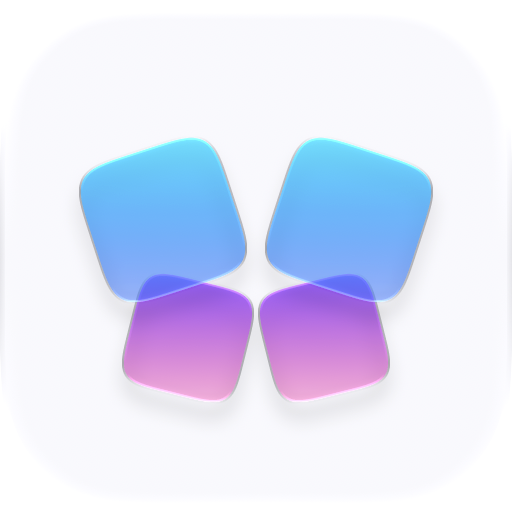
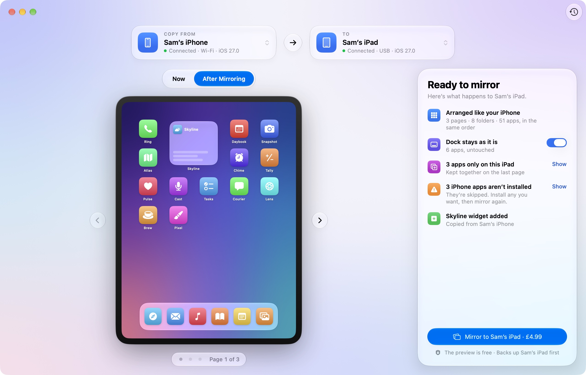

Your iPhone’s home screen, on your iPad.
Mirrorboard gives your iPad the same pages, folders and app order as your iPhone. See exactly what will change, then mirror it in seconds.
Sam’s messy iPad, arranged like their iPhone in a few seconds.
See it first
A live preview shows your iPad before and after, with real app icons. Nothing changes until you click Mirror.
Undo anytime
Your iPad’s layout is backed up before every change. One click puts it back exactly how it was.
Cable or Wi‑Fi
Plug in once. After that, your iPad can connect over Wi‑Fi, and your iPhone’s layout is remembered.
Your dock stays yours
Keep the iPad’s own dock if you like. Apps only on the iPad are kept together on the last page.
How it works
Connect your iPhone
Plug it into your Mac. Mirrorboard reads its home screen and remembers it.
Connect your iPad
Unlock it and tap Trust if it asks. The preview appears straight away.
Mirror
Check the preview, click Mirror, and your iPad matches your iPhone.
See every change before it happens

Folders, widgets, apps missing on one device: it’s all in the summary, and Undo is one click.
Questions
Is it safe for my iPad?
Mirrorboard only rearranges icons on the home screen; it never deletes apps or data. It saves a backup of the layout before every change, and Undo restores it.
What about apps that aren’t on my iPad?
They’re skipped, and Mirrorboard lists them for you. Install any you want, then mirror again to put them in their folders.
Does anything leave my Mac?
No. Your devices talk to your Mac directly. The only time Mirrorboard goes online is to check your licence and look for updates.
Do I need to jailbreak or install anything on my devices?
No. Mirrorboard uses the same connection your Mac already uses for Finder sync.
Can I use it on more than one Mac?
Yes, one purchase works on up to three Macs. You can move it between them at any time.
Can I get a refund?
The preview is free, so you can see exactly what Mirrorboard will do before you buy; sales are final after that. If it doesn’t work with your devices, email mirrorboard.app@gmail.com and we’ll fix it or refund you. See the refund policy.
What do I need?
A Mac with macOS 26 or later, and an iPhone and iPad on a recent version of iOS and iPadOS.